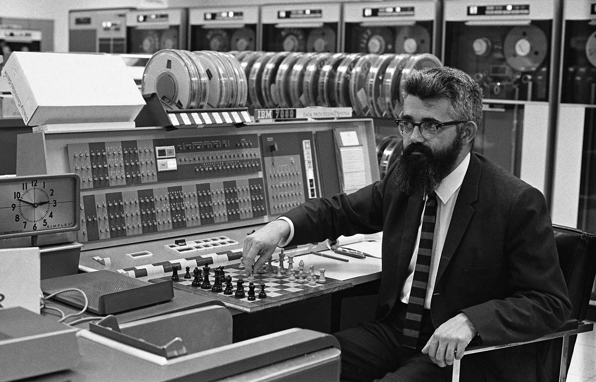

Биография
Родился в семье иммигрантов — ирландца Джона Патрика Маккарти и литовской еврейки Иды Глатт (1893—1957). Отец был профсоюзным деятелем, мать — журналисткой. Во время Великой депрессии семья была вынуждена часто менять место жительства, пока, наконец, отец Маккарти не нашёл работу в Лос-Анджелесе.
Рано проявил склонности к математике, в юности самостоятельно изучал её по университетским учебникам, которые использовались в расположенном неподалёку Калифорнийском технологическом институте. В результате, поступив в университет, смог сразу пропустить два первых года по математике. В 1948 году получил степень бакалавра математики в Калифорнийском технологическом институте, в 1951 году — докторскую степень по математике в Принстоне. После кратковременных должностей в Принстонском и Стэнфордском университетах, Дартмутском колледже и Массачусетском технологическом институте, стал профессором в Стэнфорде в 1962 году, где и оставался до ухода на пенсию в конце 2000 года.
Отстаивал использование математической логики для искусственного интеллекта. В 1958 году предложил систему «принятия советов», которая позже вдохновила работы по ответам на запросы и логическому программированию.
В том же году он разработал язык программирования Lisp и опубликовал его описание в журнале Communications of the ACM в апреле 1960 года.
В 1961 году публично предположил, что компьютерная технология разделения времени может привести к будущему, в котором вычислительные ресурсы и даже определённые приложения могут распространяться с использованием бизнес-модели сферы коммунальных услуг (подобно воде или электричеству). Эта идея была очень популярна в конце 1960 годов, но вышла из моды к середине 1970 годов, так как стало ясно, что аппаратные, программные и коммуникационные технологии того времени были просто ещё не готовы к этому. Тем не менее, начиная с 2000-х годов эта идея получила воплощение в новых формах, в частности таких, как облачные вычисления.